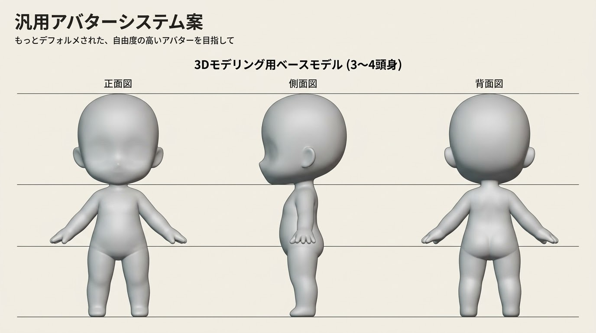

素体(試作)
約2.4頭身 / 骨18本 / ぜんぶコードで生成
← ホーム
顔の位置スライダー
変更を選ぶ
体型スライダー
案を横に並べる
頭
三面図で見本とくらべる
見本を重ねる
ねんど色
服
靴
靴下
髪
前髪
後ろ髪
顔: コードの絵
貼り方: 正面から
上下
左右
大きさ
PNGを読む
表情: ふつう
目
眉
口
肌の色
骨を見る
網目を見る
glTFを書き出す
顔の絵の位置
はじめに戻す
設定(これを教えてくれれば反映する)
体型(離すと作り直す・数秒)
はじめに戻す
設定(これを教えてくれれば反映する)
あとで試した変更(チェックすると足す)
反映(数秒)
全部オン
全部オフ
選んだ組み合わせ(これを教えてくれれば標準にする)
作り直し中…
素体を組み立て中…